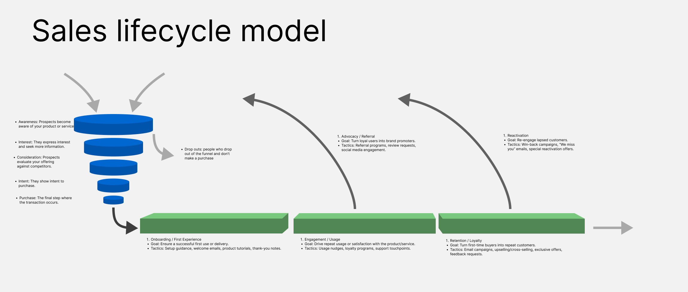

UX Design's Role in the Automotive Sales Lifecycle
It is quite common that design leaders have trouble justifying the expense of a UX department and the work they do. A lot of of UX work is, in a way, supportive. Since it contributes to outcomes but is (often) dependant on other professions it is important that you are strategic about what value the UX team brings and what their role is.
These are my half-baked ideas around how the UX team can contribute to the business here. and yes, the focus is on the business side. I've never met anyone who don't think UX designers make a product better for the customer but i've seen people question what effect it has on the bottom line.
Lots of this comes from an article i read a long time ago that were talking about a mobile games company and their business strategy. It was a simple strategy with very clear roles where the marketing department were responsible for acquisition and the engineering (along with game designers) where responsible for retention.
They built their products as a feedback loop where essentially more people buying their game meant more money meant more marketing which meant more people buying their games. The role of engineering, product, ux was essentially to get them to pay for another month of the game and thereby lower the cost of acquisition.
The article contained more details than that but this idea was so straight forward and we had a discussion about UX research and UX design earlier this week, and I wanted to write down my perspective on how UX design and research can contribute to a product. This is written with the background of automotive HMI design but can be applied to any industry.
The Customer Lifecycle Model and Product Strategy
You've probably heard of the sales funnel before (the blue part in most lifecycle diagrams). After a customer makes a purchase, we enter what's called the "post-purchase funnel" or customer journey.

The sales funnel is typically managed by marketing and sales departments, but it's in the post-purchase phase where UX design can have the most significant impact. The ultimate goal is to sell more cars, and UX can contribute by creating advocates and enabling reactivation. To achieve this, customers need to feel they're receiving the value they expected from their purchase—or even more value than they anticipated.
Optimizing the Post-Purchase Customer Journey
Onboarding: The Foundation of Value
The post-purchase funnel begins with onboarding, which enables all the value in subsequent phases. In automotive, this means ensuring users understand everything they need to operate their car effectively—how to charge it, how to set up their music and navigation systems, and so on. UX can make a substantial impact by making these processes intuitive for first-time users.
Engagement: Measuring Active Usage
Engagement is crucial if you're building an app, typically measured through Daily Active Users (DAU) or Monthly Active Users (MAU). You can also measure engagement on a per-feature basis, such as "how many people are using our search feature." UX contributes here by making features easy to use, which is often what usability testing aims to address.
Retention: Keeping Users Coming Back
Retention occurs when people continue using the product over time. It's often seen as a result of good onboarding and effective value delivery, among other factors. For subscription products, retention literally pays the bills. With cars, which are typically one-time purchases, retention helps with advocacy and maintains high resale values in secondhand markets, making the car a better investment. UX has a significant impact on retention—if users are constantly frustrated by something in the car, they'll start looking for alternatives.
Advocacy: Turning Users into Promoters
Advocacy happens when people speak positively about the brand. Bugs and difficult-to-use features prevent people from becoming advocates or can even turn them against the brand. Advocacy is directly tied to the quality of the user experience.
Reactivation: Building Brand Loyalty
Reactivation occurs when someone makes repeat purchases from your brand. This is especially important in the automotive industry, where customers tend to stick with the same brand rather than switching. Once you get someone to buy a car, they'll likely purchase their next car from you as well. Customer loyalty to brands is more common in automotive compared to other industries.
UX's Role in the Sales Funnel
UX is also crucial during the sales funnel, particularly in the phases where customers are comparing options and showing interest. This is typically when they take test drives and evaluate common use cases. They also research cars online, making advocacy particularly important during this stage.
From a design perspective, the most critical aspect of the sales funnel is avoiding unusable interfaces while creating something beautiful. Test drives don't last long, and customers are more likely to purchase if they find the car visually appealing.
The Aesthetic-Usability Effect
Products that look good are also perceived as easier to use—this is a well-documented phenomenon known as the Aesthetic-Usability Effect.
The aesthetic-usability effect refers to users' tendency to perceive attractive products as more usable. People tend to believe that things that look better will work better — even if they aren't actually more effective or efficient. - NN group.
I've noticed in automotive that some people look down on designers who prioritize visual design. There's a perception that this approach prioritizes aesthetics over functionality. I think we need to let go of that false dichotomy. It prevents us from building better products and, honestly, during a test drive the visual design is what helps sell the car. Well-thought-through interactions help retain the customer, but the visual design sells it in the first place.
UX Design as Product Strategy Unifier: Creating Coherent Experiences Across Teams
One final thing that UX design really helps with, but is the hardest to measure, is the holistic impression of the product. When large organizations work on complicated products, they tend to get siloed. Often the UX team is the first team to notice that things will not fit together in the right way. Different teams have been working on different mental models and interaction patterns. One team might have taken it as an assumption that you should hide as much complexity as possible, while another believes it's better to be transparent about the complexity.
When you suddenly need to create a front-end for these systems, you see how the systems don't match. What the UX team can help with, if they are included early enough, is to catch the most severe cases before they become costly problems. Another thing is to lay out the design strategy and formulate some basic guidelines and principles that help the organization build something coherent.
This isn't directly connected to the customer lifecycle, but instead supports it and can help build a good product with a compelling story throughout the entire sales funnel and customer journey.
Building a Strategic UX Framework for Business Success
When we create product designs, they need to serve multiple strategic purposes: they must be usable for sustained user engagement, fit appropriately into the customer journey for retention optimization, and feature excellent UI design to encourage purchases in the first place. Understanding this balance is crucial for creating successful automotive user experiences that support the entire customer lifecycle and drive measurable business outcomes. By connecting UX strategy to each phase of the customer journey—from initial attraction through onboarding, engagement, retention, advocacy, and reactivation—design teams can demonstrate clear business value and justify their strategic role in product development. This framework helps organizations build not just better products, but more profitable and sustainable customer relationships.